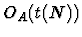
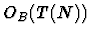
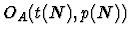
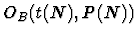
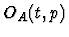
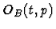
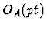
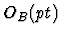

Stating our computational complexity estimates, we will assume the customary computational models of arithmetic and Boolean Random Access Machines (RAM modeles) and their parallel modifications (PRAM models) [AHU74], [KR90], [Qui94]. The estimates can be restated immediately in terms of the model of [BSS89] as well as the arithmetic and Boolean circuits [Gat86]. Moreover, to large extent, our results on computational complexity are model independent. They are reduced to invocation of a few fundamental operations such as the computation of the inner products and convolutions of vector pairs and discrete Fourier transform, for which effective algorithms are available under all the above models as well as under some more realistic models of parallel computing [Lei92].
We will write

and
to denote the sequential arithmetic and Boolean time bounds O(t(N)) and O(T(N)) , respectively, for the input size N . Under parallel models of computing, we will write
or
to denote the simultaneous time and arithmetic or Boolean processor bounds O(t(N)) and O(p(N)) , respectively. We will assume Brent's scheduling principle, according to which a simple processor needs time O(pt) to simulate the work of p processors performed in time t . In other words, the parallel cost bounds
or
imply the sequential cost bounds
or
, respectively.